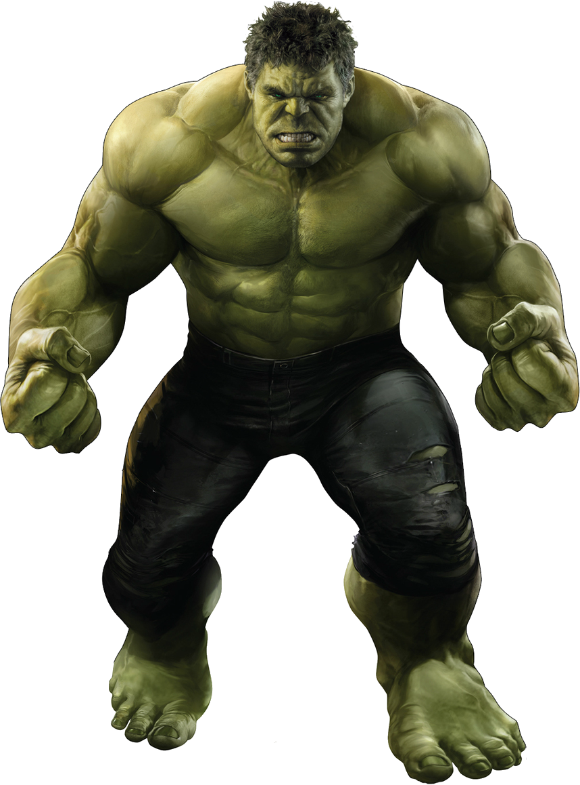
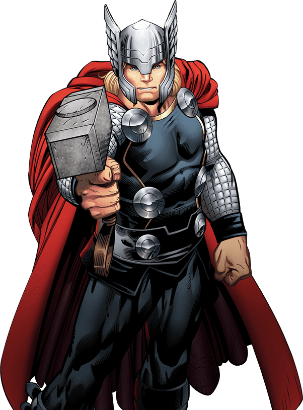

Homem Aranha
 Homem-Aranha (Peter Parker)Quem é: Um jovem estudante inteligente e bem-humorado que vive em Nova York.Origem: Ele é mordido por uma aranha radioativa em uma excursão escolar, ganhando habilidades insetoides.Poderes: Agilidade sobre-humana, sentido de alerta (sentido aranha), habilidade de aderir a paredes e lançadores de teia artificiais.
Homem-Aranha (Peter Parker)Quem é: Um jovem estudante inteligente e bem-humorado que vive em Nova York.Origem: Ele é mordido por uma aranha radioativa em uma excursão escolar, ganhando habilidades insetoides.Poderes: Agilidade sobre-humana, sentido de alerta (sentido aranha), habilidade de aderir a paredes e lançadores de teia artificiais.
Hulk

Hulk (Bruce Banner)Quem é: Um brilhante cientista especializado em radiação gama.Origem: Um acidente de laboratório expõe Banner a uma alta dose de radiação gama, fazendo-o se transformar em um monstro verde gigante quando sente raiva.Poderes: Força física quase infinita que aumenta com a raiva, resistência extrema e fator de cura rápido.Homem de Ferro
 Homem de Ferro (Tony Stark)Quem é: Um bilionário, gênio da tecnologia e empresário armamentista.
Origem: Após ser ferido gravemente no peito por seus próprios armamentos em um sequestro, ele constrói uma armadura de alta tecnologia para escapar.
Poderes: Não tem poderes biológicos; usa uma armadura avançada com armas de energia, voo supersônico e inteligência artificial.
Homem de Ferro (Tony Stark)Quem é: Um bilionário, gênio da tecnologia e empresário armamentista.
Origem: Após ser ferido gravemente no peito por seus próprios armamentos em um sequestro, ele constrói uma armadura de alta tecnologia para escapar.
Poderes: Não tem poderes biológicos; usa uma armadura avançada com armas de energia, voo supersônico e inteligência artificial.
Capitão América
 Capitão América (Steve Rogers)Quem é: Um jovem franzino que se torna o super soldado patriótico durante a Segunda Guerra Mundial.Origem: Ele recebe o soro do supersuper-soldado e passa por um tratamento especial, ganhando força e agilidade máximas.Poderes: Força sobre-humana, reflexos rápidos, cura acelerada e o uso de um escudo indestrutível de vibranium.
Capitão América (Steve Rogers)Quem é: Um jovem franzino que se torna o super soldado patriótico durante a Segunda Guerra Mundial.Origem: Ele recebe o soro do supersuper-soldado e passa por um tratamento especial, ganhando força e agilidade máximas.Poderes: Força sobre-humana, reflexos rápidos, cura acelerada e o uso de um escudo indestrutível de vibranium.
Thor

ThorQuem é: O Deus do Trovão da mitologia nórdica e príncipe de Asgard.Origem: Filho de Odin, ele é enviado à Terra para aprender humildade após agir com arrogância, aprendendo a valorizar os mortais.Poderes: Força divina, controle sobre tempestades e raios, voo e o uso de seu martelo mágico Mjölnir ou do machado Rompe-Tormentas.Doutor Estranho
 Doutor Estranho (Stephen Strange)Quem é: Um neurocirurgião arrogante que perde os movimentos das mãos em um acidente de carro.Origem: Ele busca cura em uma comunidade mística no Nepal, onde descobre a magia e se torna o Mago Supremo da Terra.Poderes: Domínio de magias universais, manipulação do tempo (através do Olho de Agamotto/Joia do Tempo), portais dimensionais e projeção astral.
Doutor Estranho (Stephen Strange)Quem é: Um neurocirurgião arrogante que perde os movimentos das mãos em um acidente de carro.Origem: Ele busca cura em uma comunidade mística no Nepal, onde descobre a magia e se torna o Mago Supremo da Terra.Poderes: Domínio de magias universais, manipulação do tempo (através do Olho de Agamotto/Joia do Tempo), portais dimensionais e projeção astral.